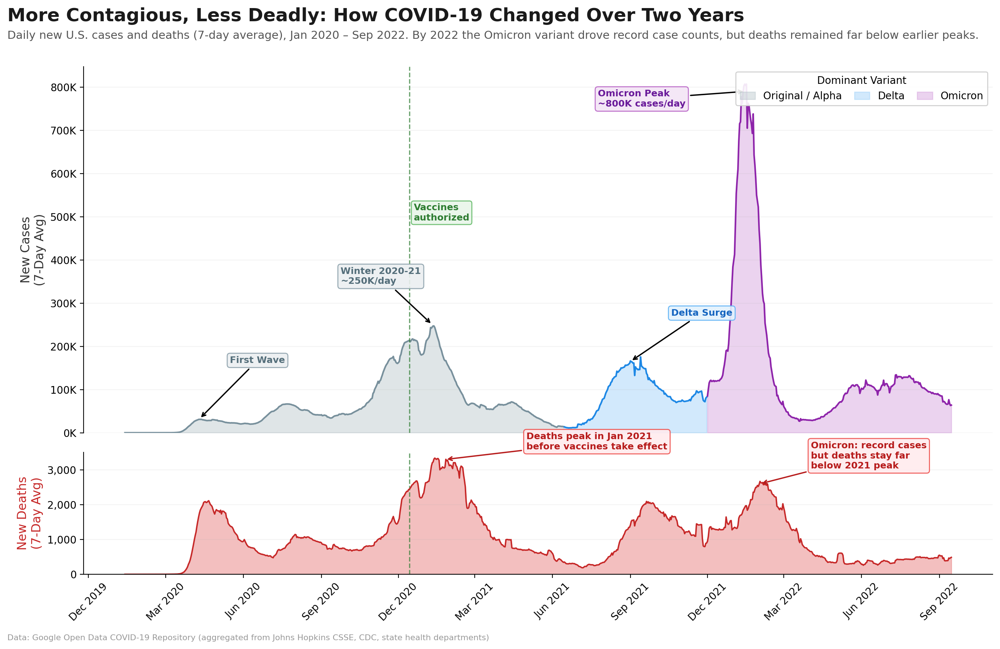

Reading & Critique

Insights about the data/visualization:
- The Exponential Scale of the Omicron Variant The most dominant feature of the visualization is the massive expansion at the outermost edge (January 2022). This "flare" represents the Omicron surge, which, according to the visual width, generated case volumes several times larger than any previous peak in the 2020 or 2021 rings. It illustrates that the sheer number of infections at the start of 2022 was an unprecedented statistical outlier compared to the rest of the pandemic.
- Seasonal Clustering and Winter Vulnerability The spiral reveals a clear "clock-like" pattern of seasonality. By looking at the top of the visualization (the January/February axis), there is a consistent thickening of the red band across multiple years. This indicates that while the virus persisted year-round, its most aggressive transmission consistently aligned with the winter months, showing a repetitive cyclical trend.
- The Mid-2021 Low and Delta Rebound The visualization shows a significant contraction in the late spring and early summer of 2021 (the middle ring, moving toward the bottom). This period represents the lowest point of transmission since the pandemic's start. However, the insight here is the rapid "re-widening" that occurs immediately after in August/September 2021, visually capturing the moment the Delta variant took hold and reversed the downward trend.
Design Critique:
Instead of presenting the data on a traditional linear timeline, the spiral format reveals seasonal cyclicality in a more intuitive way. By aligning months radially, like a clock, the viewer can quickly recognize that winter repeatedly emerges as a period of heightened vulnerability. The color red reinforces this clarity, and it allows the central message on seasonality and the unprecedented scale of Omicron to stand out. Published in a New York Times opinion article aimed at a general audience, the spiral format prioritizes emotional impact and narrative over analytical precision, which is appropriate for its context.
This design makes precise quantitative comparison more difficult than a linear chart would. Comparing exact magnitudes across distant parts of the spiral, such as winter 2020 and summer 2021, requires mentally estimating differences in radius. The outermost Omicron surge also pushes against the edge of the chart, which slightly reduces the sense of how much larger it is without nearby numerical labels. There is also the possibility of area bias and scale distortion, because the outer rings of the spiral have a larger circumference than the inner rings, meaning a single day in 2022 occupies more physical space than a day in 2020 and can visually amplify more recent data.
I think this visualization is a story driven choice that succeeds at its main purpose. It makes the seasonal pattern feel inevitable and makes the scale of Omicron feel urgent and visceral.
Visualization Sketches

Design Rationale for Sketch 1:
- The primary rationale behind this sketch was to restore mathematical parity across time. In the spiral, outer years visually expand while inner years are compressed, distorting duration and magnitude. I wanted to establish a baseline truth with an undistorted timeline and evaluate whether the perceived escalation was real or a byproduct of layout.
- I think this sketch communicates magnitude comparison across waves. The scale of the 2022 surge becomes immediately visible, and early 2020 outbreaks regain proportional visibility. I think it removes center compression and area bias. Peaks are easy to compare, and early pandemic data is no longer visually minimized.
- By choosing this visualization, the cyclical insight is less perceptually obvious. Seasonality requires mental alignment rather than visual alignment. Additionally, peak dominance bias remains, as the tallest spike continues to visually dominate interpretation. This loss of cyclical clarity motivated the next sketch, which explores whether a grid-based layout can recover the seasonal pattern the spiral communicated so well, without inheriting its distortion.

Design Rationale for Sketch 2:
- This visualization targets center compression by assigning equal visual real estate to every month. Instead of encoding magnitude through height or radial distance, it encodes intensity through color. The motivation was to abstract away the dramatic shape of the curve and focus purely on intensity patterns. By converting daily data into monthly intensity blocks, the visualization encourages pattern recognition rather than shock value. It aims to reduce peak salience and highlight recurring seasonal clustering.
- The grid makes winter surges immediately visible across years. Delta summer and Omicron winter appear as saturated blocks, enabling clean cross year month comparison. Seasonal recurrence becomes easier to detect than in a linear timeline.
- I think the equal sizing of months corrects the spiral distortion and improves fairness of comparison. High intensity periods stand out clearly without requiring slope interpretation. However, this abstracts away many detail like the shape of growth and acceleration of growth. The grid emphasizes pattern over story. Because this sketch strips away both temporal continuity and narrative shape, the next sketch explores a cumulative encoding that reintroduces the time axis while also bringing in a second variable, deaths, that the original spiral ignored entirely.

Design Rationale for Sketch 3:
- This sketch addresses peak bias by transforming daily fluctuations into cumulative accumulation. Instead of emphasizing the highest single point, it encodes total burden as slope and final height. The motivation was to shift the interpretive focus from how tall was the spike to how fast burden accumulated, reframing comparison around transmission velocity rather than peak magnitude. Crucially, this sketch also introduces a second data dimension, cumulative deaths, plotted on a separate axis. The original spiral encoded only case counts, offering no insight into severity or how the relationship between infections and mortality evolved over time.
- The cumulative curves clearly show burden velocity, with steeper slopes indicating faster spread and more intense transmission periods. Differences between gradual buildup and explosive early year surges become visible, making structural contrasts across years easier to interpret. However, the smoothing effect hides wave oscillation and duration, and the January reset imposes artificial calendar boundaries that can split waves across years.
- While analytically powerful, the chart may feel less intuitive for general audiences because it removes familiar peak shapes. It also obscures short term daily dynamics, prioritizing long term accumulation over detailed temporal variation. The dual variable approach of this sketch, combining cases and deaths on a shared timeline, directly informed the final design. However, the cumulative encoding obscured the wave by wave dynamics that made the original spiral so compelling, suggesting the final design should return to daily values while retaining the multi variable structure.
Final Visualization Design

Final Writeup
COVID 19 became significantly more contagious over time, but its lethality decreased relative to case counts due to vaccines and improved treatments, especially during Omicron. To communicate this structural shift, I use a two panel layout with a shared time axis. The top panel shows daily new cases as a filled area chart colored by dominant variant phase, gray for Original and Alpha, blue for Delta, and purple for Omicron, while the bottom panel shows daily new deaths in red on the same time scale. This alignment enables direct temporal comparison and makes the decoupling visible, the Omicron case surge reaches unprecedented levels, yet the corresponding death peak remains well below January 2021. Filled areas emphasize surge magnitude and make inflection points salient, even though area can exaggerate perceived scale. Vertically stacking the panels avoids dual axis confusion, and the 3 to 1 height ratio reflects the greater variance in cases while preserving comparability through the shared x axis. Variant phase colors encode regime shifts directly in the timeline, the dashed vaccine authorization marker anchors the key explanatory moment, and targeted annotations guide attention without clutter. However, this design downplays certain aspects of the data, absolute mortality during Omicron remains substantial even if lower than earlier peaks, seasonality is less intuitive in a linear layout, and the case fatality relationship is implied rather than explicitly quantified.
The iterative sketching process directly shaped this final design. Each sketch resolved one critique but exposed another, Sketch 1 fixed distortion but lost seasonality, Sketch 2 recovered cyclical patterns but lost temporal narrative, and Sketch 3 introduced deaths but obscured daily dynamics. The final design synthesizes across all three, using a linear timeline, variant phase coloring, and aligned case and death panels. Returning to the critiques from Step 2, the final design resolves area bias by giving each day equal horizontal space, improves magnitude comparison through a shared linear axis with gridlines, and surfaces the severity dimension the spiral ignored by adding deaths. However, not all critiques could be fully addressed. The spiral's ability to make seasonal clustering feel immediate and inevitable is fundamentally a property of its radial layout, and no linear redesign can replicate that perceptual effect. The two panel structure also introduces its own tradeoff, separating cases and deaths makes each readable independently, but it prevents the viewer from seeing their ratio directly, meaning the case fatality relationship is implied rather than quantified. The process of critique by redesign revealed that many of the spiral's apparent weaknesses were inseparable from its strengths. As Viegas and Wattenberg argue, design is compromise, and the spiral was published in a New York Times opinion piece where emotional urgency mattered more than analytical precision. My redesign optimizes for comparison and explanation, but it loses the visceral seasonal rhythm the spiral conveyed so naturally. This tension between analytical clarity and perceptual immediacy proved to be the central design challenge, and it is one that no single visualization can fully resolve.